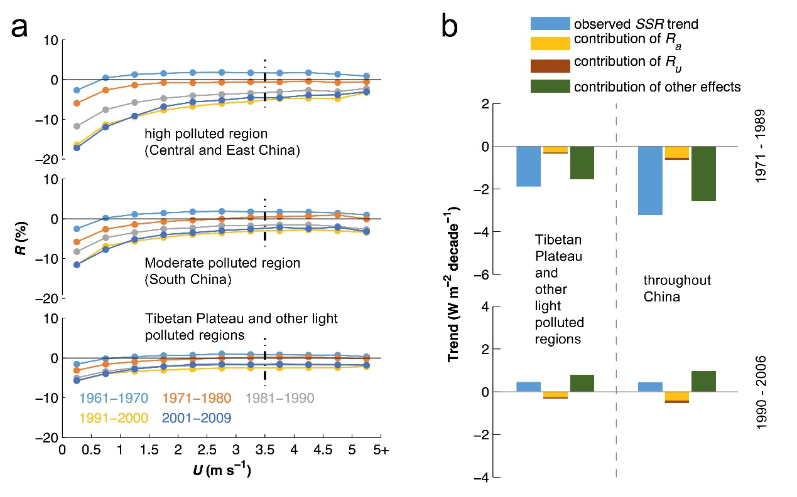

Solar dimming and wind stilling (slowdown) are two
outstanding climate changes occurred in China over the last four decades. The wind stilling may have
suppressed the dispersion of aerosols and amplified the impact of aerosol emission on solar dimming.
However, there is a lack of long-term aerosol monitoring and associated study in China to confirm this
hypothesis.
In a recent publication in Scientific Reports by CETES scientist Prof. Kun Yang’s group, long-term
meteorological data at weather stations combined with short-term aerosol data were used to assess this
hypothesis. It was found that surface solar radiation (SSR) decreased considerably (can be as high as 15%)
with wind stilling in heavily polluted regions at a daily scale (Fig 1a), indicating that wind stilling can
considerably amplify the aerosol extinction effect on SSR. This effect is tiny in lightly polluted regions
such the Tibetan Plateau. A threshold value of 3.5 m/s for wind speed is required to effectively reduce
aerosols concentration. From this SSR dependence on wind speed, they further derived proxies to quantify
aerosol emission and wind stilling amplification effects on SSR variations at a decadal scale. The results
show that aerosol emission accounted for approximately 20% of the typical solar dimming in China, which was
amplified by approximately 20% by wind stilling (Fig 1b).
The relevant publication is available at:
Lin, C., K. Yang, J. Huang, W. Tang, J. Qin, X. Niu,
Y. Chen, D. Chen, N. Lu & R. Fu. Impacts of wind stilling on solar radiation variability in
China.Sci. Rep. 5, 15135; doi: 10.1038/srep15135 (2015).
Link: http://www.nature.com/articles/srep15135

(a) Statistical decadal relationship between solar radiation and wind speed; (b)
Observed SSR trends and the contribution of direct aerosol effects (Ra and Ru) and other
effects.